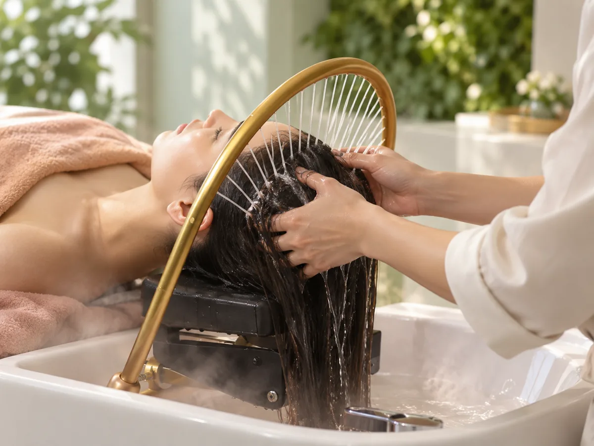

01
Спа-ритуал «Антистресс для головы»
Шесть этапов: массаж головы руками и дугой, очищение и пилинг кожи головы, маска в паровой арома-ванне, уход для лица и рук, массаж шеи и чайная церемония
8 000 ₽
Подробнее ↓
Как проходит
- Погружение в расслабление — японский ритуал: массажёр-«мурашка», гребни и лимфодренажный массажёр
- Глубокий массаж головы — руками и золотой дугой, до мурашек
- Очищение — пенный массаж и пилинг кожи головы
- Восстановление волос — маска в паровой арома-ванне
- Уход для лица и рук — очищение, тонизация, питание, увлажнение, массаж криосферами
- Завершение — массаж шеи и плеч, укладка и чайная церемония
Сколько длится — уточним при записи
Кому подойдёт — когда нужно остановиться, выдохнуть и прийти в себя; когда хочется паузы от города и забот и чтобы о вас позаботились
Что после — лёгкость в теле и ощущение перезагрузки. Вы уходите с чистыми, уложенными волосами и можете сразу ехать по делам — а лучше оставить себе спокойный вечер